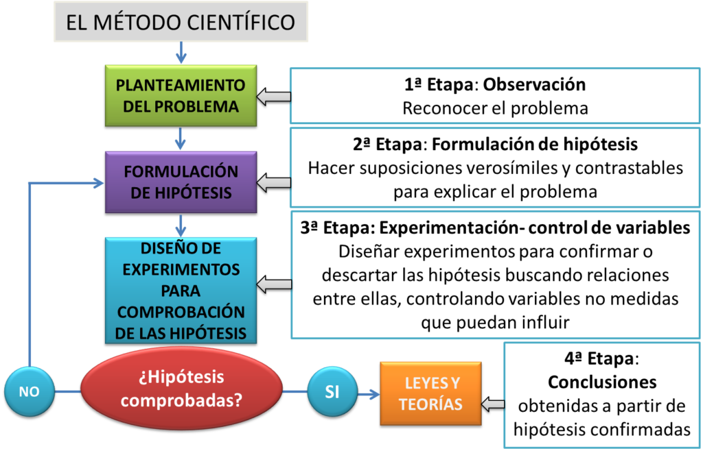

La Ciencia
Al conjunto de conocimientos que las personas tenemos sobre el mundo, así como la actividad humana destinada a conseguirlos, es lo que denominamos ciencia.
La ciencia posee las siguientes características: sistemática, acumulativa, metódica, provisional, comprobable, especializada, abierta y producto de una investigación científica.
Sistemática; toda vez que los elementos que la integran se encuentran estructurados en íntima relación unos con otros.
Acumulativa: porque aprovecha y se sirve de todos los conocimientos que se han logrado en todas las épocas y lugares, por lo cual no es necesario reinventar continuamente.
Metódica; porque requiere de un proceso ordenado en la búsqueda de aquellos elementos que constituyen los conocimientos científicos “adquiridos y ordenamos metódicamente”
Provisional: la ciencia no se acaba, es motivo de constante análisis; porque es perfectible y, por ello, evolutiva, cambiante, no permanente y definitiva.
Comprobable; los conocimientos que la conforman pueden ser comprobables, y verificables. Las ciencias formales como son la lógica y las matemáticas, son sujetas a demostración; las ciencia factuales, como los son las ciencias naturales, y sociales, son sujetas de verificación.
Especializada; cada ciencia tiene su propio y particular campo de estudio, que le es característico.
El método científico
modo ordenado de proceder para llegar a un resultado o fin determinado, especialmente para descubrir la verdad y sistematizar los conocimientos
¿Qué es la biología?
La biología es la ciencia que estudia a los seres vivos, su estructura, funciones, desarrollo, origen, evolución y relaciones con el medio ambiente.
BIO: prefijo de vida. LOGIA subfijo de ciencia. Por eso se dice que es la ciencia que estudia la vida. Como la Geología, estudia la Tierra (GEO = Tierra); Psicología es la ciencia que estudia la psiquis.
En esta materia vamos a estudiar la vida y aprovechar para utilizar la ciencia como entrenamiento para la vida de toma de decisiones informadas.
Les dejo unos resumenes y una tarea para hacer
Descargar PDF De la CienciaDescargar PDF del Método Científico
Descargar PDF la tarea sobre le Método Científico